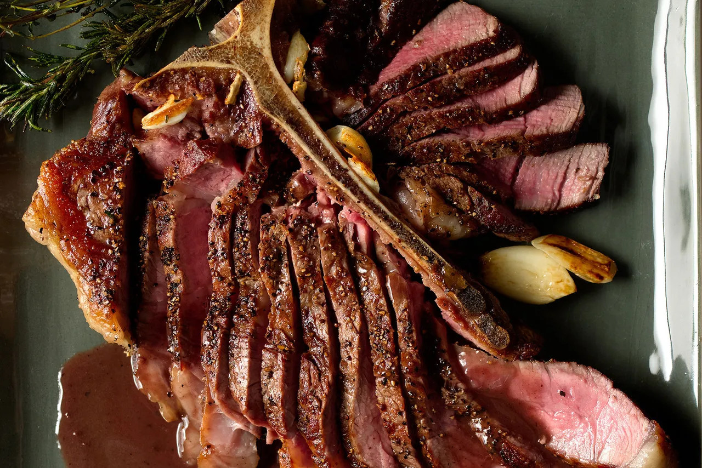

Porterhouse Steak

Description
This is a good steak to have every night for dinner for those of you who
are lifting trying to get those gains.
Ingredients
- Porterhouse Steak: as much as you can eat
- Butter
- Garlic
- Rosemary or Thyme
- (Optional) Vegetables
- (Optional) Carbs
Steps
-
Get meat out of fridge and let it sit for at least 10 minutes so it's
not so cold
- Add salt and pepper to the meat
- Make pan very hot
- Oil pan a bit
- Put meat on pan
- Flip it every 30-60 seconds, and add the other stuff:
- Put thyme or whatever on it
- Put garlic pieces on it (just get the skin off, no mushing>
- Put butter on it
- Take meat off when it's cooked as much as you like
- The pan sauce is good: Pour some of that stuff on it
- Eat